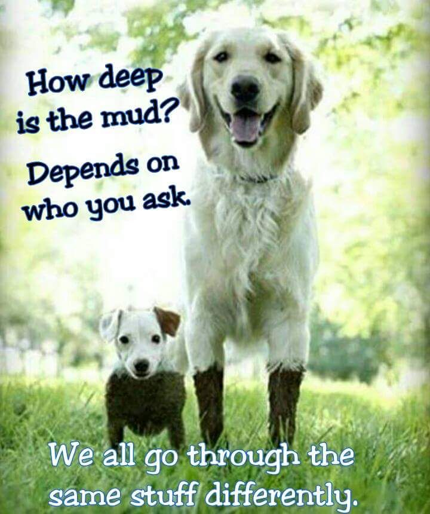

14 · ¿Quiénes Somos?
Somos un grupo de estudiantes de la Facultad de Ciencias Físicas y Matemáticas de la Universidad de Chile a los cuales les une la preocupación por el impacto ambiental y el bienestar animal. Tomamos a los microbasurales como problemática principal ya que entendemos que degradan el ambiente en el que convivimos diariamente, convirtiéndolo en un espacio inseguro no solo para las familias, ya que gran parte de los afectados son los perros y gatos callejeros.
Teniendo esto en mente nos propusimos visibilizar y transformar los focos críticos donde los microbasurales afectan a perros y gatos callejeros en La Cisterna, articulando a la comunidad mediante la ciencia ciudadana para geolocalizar estos puntos, coordinar su limpieza con el municipio y canalizar apoyo junto a fundaciones de protección animal.
Hacemos esto ya que creemos que la salud animal junto con el bienestar de la comunidad están interconectados, ya que un entorno limpio es un derecho para todos los seres vivos.
Nuestra Inspiración
Nuestra inspiración y lema se reflejan perfectamente en la imagen que nos guía: "How deep is the mud? Depends on who you ask. We all go through the same stuff differently." Para nosotros, esta metáfora representa la realidad de los animales callejeros frente a la crisis de los microbasurales. Mientras que para una persona un cúmulo de basura puede ser solo una molestia visual o un problema pasajero, para un perro o un gato abandonado ese mismo entorno es un obstáculo crítico que pone en riesgo su supervivencia. Es por esto que nuestra plataforma de ciencia ciudadana busca dar visibilidad a esos puntos ciegos del territorio, transformando los reportes vecinales en evidencia concreta para recuperar el entorno y proteger la salud y dignidad de los animales afectados.

Si te interesa conocer de cerca cómo avanza nuestro proyecto, los desafíos que enfrentamos y los pequeños logros que vamos alcanzando, te invitamos a leer nuestros blogs.